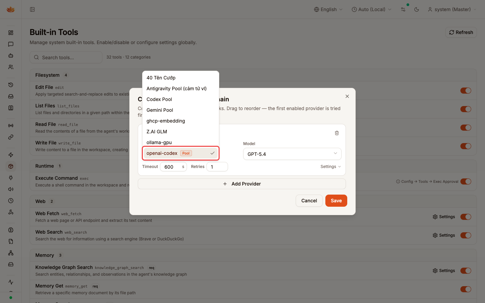

claw, master tenant, light theme, openai-codex provider configured as a 2-member round_robin pool with openai-codex-2 as a member.Chain entries pointing at a Codex OAuth pool now route through the pool's own strategy with internal failover. The outer chain only advances after the pool is fully exhausted.
Before: users could accidentally select a pool member in the chain and bypass pool semantics. Now: the dropdown hides pool members and tags owners with an inline Pool chip — mirrors the Create Agent dropdown.
The inline Pool chip next to openai-codex — and the absence of openai-codex-2 from the list — proves the UX unification. Backend failover is proven by 5 integration scenarios in create_image_pool_chain_test.go.
openai-codex option tagged with an inline Pool chip. openai-codex-2 (a pool member) is no longer listed — pool routing is reached only by picking the owner, matching the existing Create Agent dropdown pattern.
go build ./... — ok (PG) go build -tags sqliteonly ./... — ok (Desktop) go vet ./... — no issues go test ./internal/tools/... ./internal/providers/... — 1599 passed Integration: 5 pool-chain scenarios × 5 runs under -race — 25/25 deterministic pnpm --dir ui/web tsc --noEmit — no errors